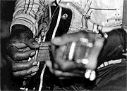

- ATB's Who's Who -
- ATB's Who's Who -
Как миссиссипианин, родившийся в Дельте 20-х годов, Бернсайд имел возможность в детстве слушать выступления ныне легендарных блюзмэнов: Миссиссиппи Фреда МакДауэлла (Mississippi Fred McDowell), Букки Уайта (Bukka White) и Мадди Уотерса (Muddy Waters) (еще до отъезда последнего в Чикаго и его славы "отца чикагского блюза"). Начал выступать в местных кабаках и пивных еще подростком. Первые записи сделал в 60-х для антологии "Mississippi Delta Blues", выпущенной известной блюзовой фирмой "Архули" (Arhoolie). В 1971г. впервые гастролировал в Европе, получив там признание большее, чем на родине. В 80-х записывает в Европе несколько альбомов для маленьких фирм грамзаписи. Выступление Бернсайда можно увидеть в фильме, посвященному Дельта-блюзу 90-х: "Deep Blues"и услышать в CD-альбоме под тем же названием 1992 года. Фильм открыл музыкальному миру, что Дельта-блюз находится в добром здравии, и признание пришло ко многим из его героев. Бернсайд стал появляться на крупнейших блюзовых фестивалях, а статьи о нем напечатали ведущие блюзовые и гитарные журналы. В 1993г. записал относительно неудачный альбом для блюзовой фирмы, поддерживающей современных традиционалистов "Фэт Поссум" (Fat Possum). Более показательным для его стиля был следующий альбом, продюсером которого стал известный журналист Роберт Палмер. Альбом 1996 года записан Бернсайдом за один день при помощи Джона Спенсера, ветерана панк-рока, ныне лидера экстремальной альтернативной группы "Jon Spencer Blues Explossion".  Бернсайд играет на электрогитаре, но в стиле сельских "грязных" танцев начала века. С точки зрения виртуозности, его гитарный почерк крайне примитивен. Но в пятницу вечером и в субботу в сельских кабачках слишком шумно, чтобы расслышать изысканное гитарное соло. Бернсайд пользуется набором проверенных десятилетиями блюзовых рифов, и создает неотразимый ритм, способный поднять в пляс любого работягу после тяжелой недели. Парадокс в том, что этот глубоко утилитарный и строго локальный стиль теперь звучит на европейских фестивалях для публики, которая, в лучшем случае, вкалывает на компьютере или с мобильником в руке.ВЭБ™'99
Дискография:
В сети: |